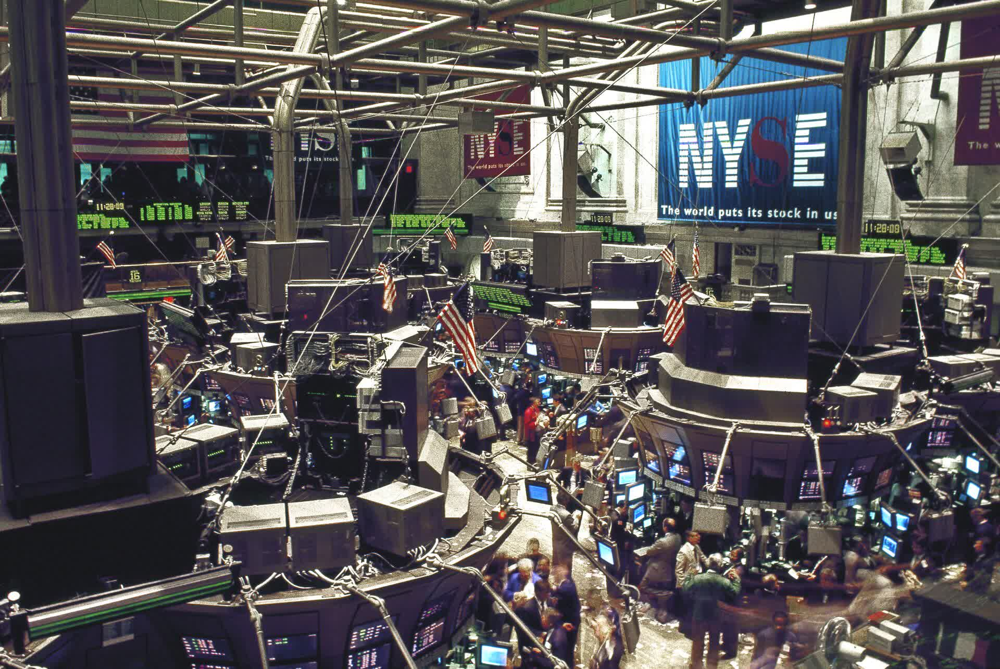

Как работают акции и фондовый рынок: основы инвестирования
Акция (aksiya) — доля владения в компании; фондовый рынок — регулируемая площадка для торговли акциями и другими ценными бумагами (например, NYSE, Nasdaq, Лондон, а также Республиканская фондовая биржа «Тошкент» в Узбекистане). Ниже нейтрально и строго по официальным и авторитетным источникам объясняется, что такое акция, как работает биржа, первичный и вторичный рынок (IPO), как цена формируется спросом и предложением, чем отличаются облигации и акции, что такое индексы (например, S&P 500), риск и диверсификация, а также роль брокеров и регуляторов. Это не совет — инвестирование несёт риск потерь.

Акции и фондовый рынок — ключевые понятия современных финансов. Ниже объясняется, что такое акция, как работает фондовая биржа, как формируются цены, чем облигация отличается от акции, что такое индексы, риск, а также роль брокеров и регуляторов — строго по авторитетным источникам: ресурсам Investor.gov Комиссии США по ценным бумагам и биржам (SEC), финансовым справочным материалам и собственным определениям бирж, нейтрально и только на основе фактов. Этот материал объясняет механику; это не инвестиционный совет и не рекомендация.
Что такое акция
Акция (по-английски share или stock) — ценная бумага, обозначающая долю владения в компании. По определению SEC, владелец акции имеет долю собственности в корпорации и право на пропорциональную часть её активов и прибыли; большинство акций также дают владельцу право голоса (например, при выборе совета директоров). Если часть прибыли компании распределяется между акционерами, это называется дивидендом; однако дивиденды не гарантированы и зависят от решения компании и её финансового состояния. Стоимость акции на рынке меняется — она может как расти, так и падать.
Что такое фондовая биржа
Фондовая биржа — регулируемая площадка, где покупаются и продаются акции и другие ценные бумаги. Она сводит вместе покупателей и продавцов, делает цены прозрачными и обеспечивает совершение сделок по правилам. Крупные мировые примеры — Нью-Йоркская фондовая биржа (NYSE), Nasdaq и Лондонская фондовая биржа. В Узбекистане основная площадка — Республиканская фондовая биржа «Тошкент» (РФБ «Тошкент»), основанная 8 апреля 1994 года; это единственная в стране площадка для торговли акциями и корпоративными облигациями.
Первичный и вторичный рынок (IPO)
Рынок ценных бумаг состоит из двух уровней. На первичном рынке новые ценные бумаги впервые продаются инвесторам, и средства поступают напрямую эмитенту (компании, выпускающей бумагу). Когда компания впервые официально предлагает свои акции широкой публике, это называется первичным публичным размещением, или IPO; IPO формирует рынок торговли акциями компании. На вторичном рынке уже выпущенные бумаги перепродаются между инвесторами — обычно под «фондовым рынком» понимают именно этот вторичный рынок; здесь деньги достаются не эмитенту, а инвестору, продающему бумагу.
Как формируется цена
Цена акции формируется спросом и предложением. Если на акцию много покупателей (высокий спрос), цена растёт; если много продавцов (высокое предложение), цена падает. На бирже есть цена, которую предлагает покупатель (бид), и цена, которую запрашивает продавец (аск); разница между ними называется спредом. На цену влияют результаты компании, экономические новости и ожидания инвесторов, поэтому она постоянно меняется.
Индексы — измеритель рынка
Индекс — измеритель, который сводит общее движение группы из множества акций к одному показателю. Например, S&P 500 — индекс из 500 крупных и широко распространённых обыкновенных акций, считающихся представительными для фондового рынка США в целом, и он часто используется как эталон (бенчмарк) для оценки результатов рынка и фондов. Сам индекс не является тем, что покупают, — он служит для отслеживания общего состояния рынка; однако существуют и фонды, отслеживающие индекс.
Разница между облигацией и акцией
Облигация (по-английски bond) — долговая ценная бумага, своего рода долговая расписка. Инвестор, купивший облигацию, одалживает деньги на определённый срок эмитенту (государству, муниципалитету или компании); эмитент обещает выплачивать установленный процент (купон) и вернуть основную сумму в конце срока. Главное отличие: акция обозначает владение (капитал/equity), а облигация — долг (debt). Облигация известна тем, что даёт фиксированный доход, но она тоже не безопасна — эмитент может не выполнить выплаты.
Риск и диверсификация
Любая инвестиция связана с риском — стоимость акций и облигаций может упасть, и инвестор может вернуть меньше вложенного или потерять всё. Практика распределения денег между разными инвестициями для снижения риска называется диверсификацией: распределение средств между многими компаниями или секторами может смягчить общий убыток, если одна компания или сектор пострадают. Диверсификация снижает риск, но не устраняет его полностью и не гарантирует прибыль — это финансовое понятие, а не рекомендация.
Брокеры и регуляторы
Обычный инвестор покупает акцию не напрямую на бирже, а через брокера (брокера-дилера) — лицензированного посредника, передающего заявки на биржу. Рынок контролируют регуляторы: в США это Комиссия по ценным бумагам и биржам (SEC), которая устанавливает и применяет правила для защиты инвесторов и поддержания справедливого и упорядоченного рынка. В Узбекистане рынок капитала с сентября 2023 года регулирует Национальное агентство перспективных проектов (NAPP), которое лицензирует и контролирует участников рынка.
Заключительное замечание: инвестирование связано с риском
Знание того, как работает фондовый рынок, не является инвестиционным советом. Прошлые результаты не гарантируют будущей доходности, и любая инвестиция — включая акции, облигации и фонды — несёт риск потери части или всех вложенных средств. Эта статья даёт лишь общую информацию; перед конкретным решением следует ознакомиться с официальными источниками.
Источники
- SEC Investor.gov — Stock (aksiya taʼrifi, egalik, dividend)
- SEC Investor.gov — How Stock Markets Work (birlamchi/ikkilamchi bozor, IPO, narx)
- SEC Investor.gov — Bonds (obligatsiya qarz qimmatli qogʻozi)
- SEC Investor.gov — Asset Allocation and Diversification (diversifikatsiya, xavf)
- SEC Investor.gov — Glossary (S&P 500 indeksi, spred)
- Tashkent Stock Exchange (RFB “Toshkent”, 1994; NAPP regulyator) — Wikipedia